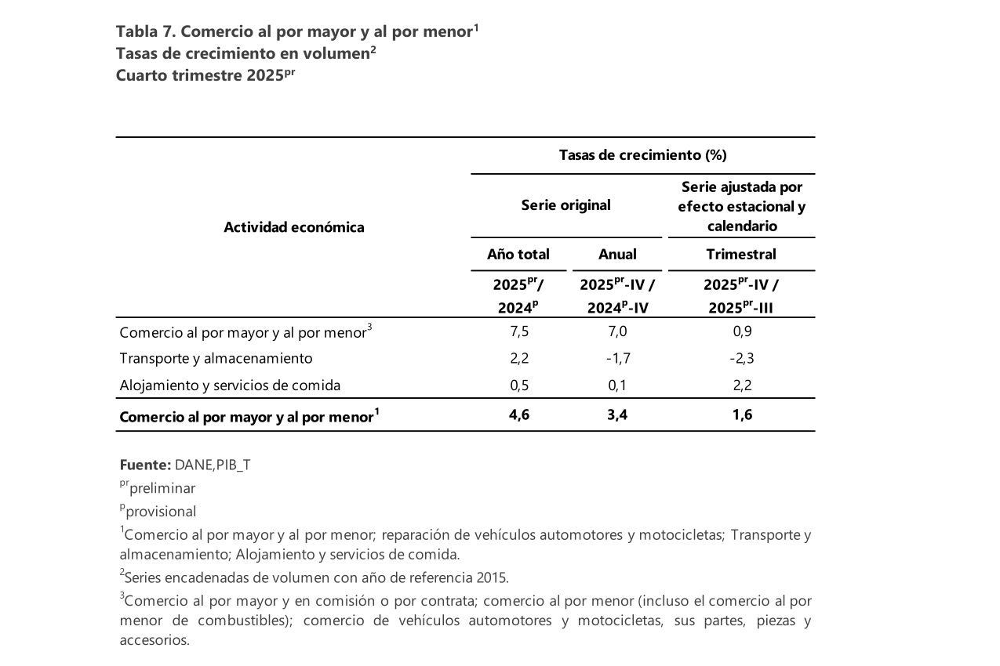
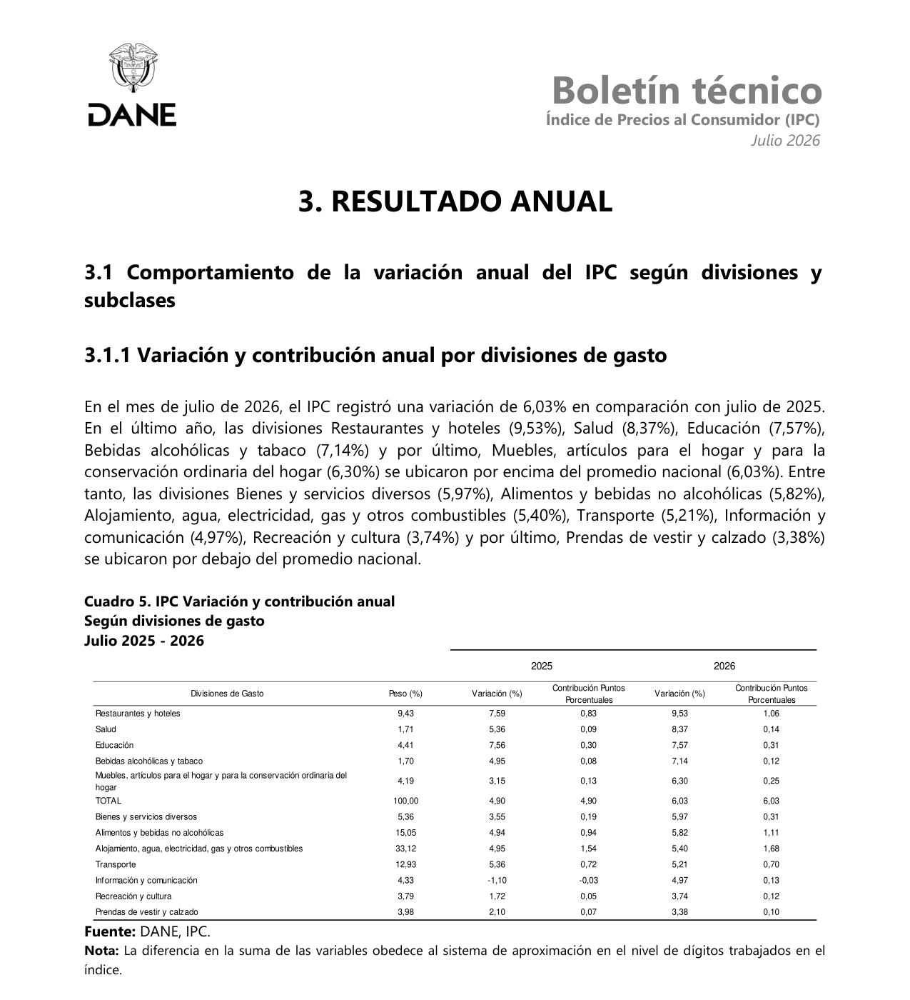
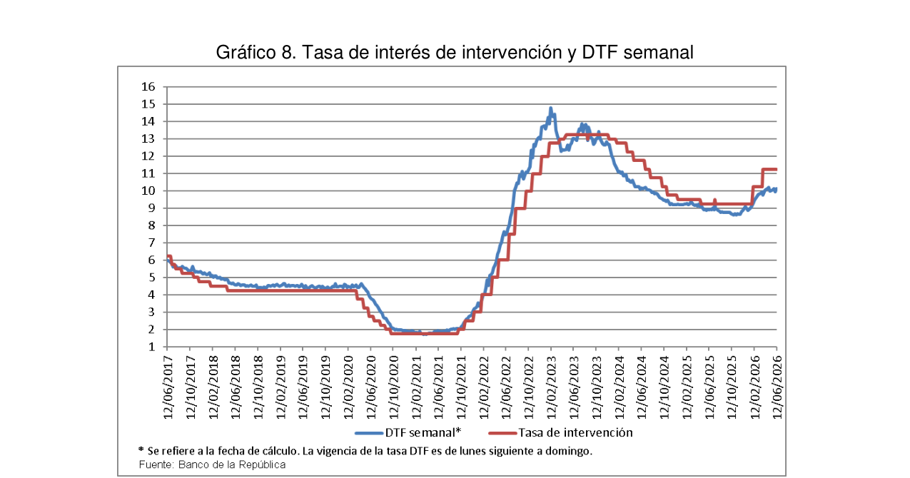

2.1.1 Shift to a Service Economy: GDP
1. Introduction
David's Strategic Management lists "shift to a service economy" as the first key economic variable a firm should monitor (Table 3-1), alongside GDP trends and consumption patterns — because as a country's output shifts from goods to services, entirely new categories of service businesses become viable. Colombia's economy has undergone exactly this structural shift toward tertiarization: services now account for the majority of national output, reflecting a maturing domestic consumption market centered on efficiency, convenience, and responsiveness — the same qualities the quick-service restaurant (QSR) industry sells.
Within this broader shift, the sub-branch that groups accommodation and food services is a direct barometer of consumer confidence and urban social mobility, and the QSR segment within it has become an autonomous growth engine, built on standardization, delivery speed, and process optimization rather than traditional table service.
2. Data
Services' Share of Colombia's GDP
DANE / TheGlobalEconomy.com & Statista — services spiked during the pandemic as other sectors contracted, then settled at a still-dominant share
QSR Segment Growth Forecast
Total foodservice market (2026)
CAGR, 2026–2035 (updated Jun 2026)

-
2020
Services peak at 60.1% of GDP
Pandemic-era contraction in goods-producing sectors pushed services' share of Colombia's GDP to a high of 60.1% (TheGlobalEconomy.com).
-
2023
Settles at 56.9%, still the dominant sector
DANE's national accounts (as compiled by Statista) show services normalizing to 56.9% of GDP as the broader economy recovered — still the largest single contributor to national output.
-
Jun 2026
QSR market forecast updated: 5.8% CAGR through 2035
Expert Market Research's latest update values Colombia's fast-food market above USD 21 billion, with ~1.5M daily visits nationwide and 1 in 4 Colombians (ages 5–64) eating fast food weekly (2025 sector ranking).
Table — Colombia's Foodservice Market: Key Metrics
| Metric | Market Estimate |
|---|---|
| Market Value (Total Foodservice) | Over USD 21 billion (2026) |
| QSR Annual Growth Rate (CAGR, 2026–2035) | Approximately 5.8% |
| Daily Visits to Fast-Food Restaurants | ~1.5 million nationwide |
| Weekly Fast-Food Consumers (ages 5–64) | ~1 in 4 Colombians |
3. Opportunities and Threats
Opportunity
- A services sector still above 56% of GDP and a QSR segment forecast to grow at a 5.8% CAGR through 2035 (1.5M daily visits, 1 in 4 Colombians eating fast food weekly) represent a large, expanding addressable market for a new entrant — the single strongest data point in this variable.
4. Analysis
The shift toward a service economy is the variable that makes a quick-service restaurant business model viable at all: the QSR industry is not operating in a shrinking or static market, but in a segment that is both large today (USD 21B+, 1.5M daily visits) and still expanding (5.8% CAGR through 2035), even after the pandemic-era spike in services' GDP share normalized. Because this growth is structural — tied to urbanization and digitalization rather than a temporary spike — it should be read as a durable industry-wide opportunity rather than a short-lived one, favoring entry now over waiting for the market to mature further.
This growth is not accidental; it responds to structural changes in consumer behavior and technology. The massive adoption of last-mile delivery platforms allows quick-service establishments to scale sales without expanding physical dine-in infrastructure. Growing urbanization centralizes consumption in high-density nodes, favoring fast-food models due to constant foot traffic and demand for quick meal solutions. And recipe standardization with inventory management through information systems lets fast-food operators reduce variable costs and increase contribution margin — a direct source of the sector's outsized contribution to GDP through spending efficiency and job creation, since the industry is highly labor-intensive and drives both direct and indirect employment.
5. Bibliography
2.1.2 Availability of Credit
1. Introduction
David's Table 3-1 lists "availability of credit" among the key economic variables a firm should monitor: whether financing exists for a small operator at all. For any service business, this variable determines how a first location gets financed and how quickly further expansion can follow.
Colombia's gastronomic industry is made up of more than 107,000 establishments, of which 95% are microenterprises — a concentration of small-scale operators that directly shapes real financing conditions across the market.
2. Data
How Micro-Food Businesses Get Started (Mar 2026)
DANE EMICRON, cited in Banco de la República's March 2026 credit report. The remaining 29.8% covers other EMICRON financing categories (e.g. supplier credit and family funds not classified as "informal loans") not broken out individually in the source.
-
Mar 2026
Only 8.8% of micro-food businesses start with a bank loan
Banco de la República's Credit Situation Report and DANE's EMICRON survey show just 8.8% of micro-food businesses secure a formal bank loan to start, while 61.4% rely exclusively on personal savings or informal loans from family and acquaintances. The remaining 29.8% is spread across other EMICRON financing categories not broken out individually in the source (e.g. supplier credit or family funds not classified as "informal loans").
Financing channels for growth and working capital
| Financing Channel | Characteristics in the Colombian Market |
|---|---|
| Traditional Commercial Banking | Requires rigorous formal documentation (audited financials, credit history, real collateral); mainly accessible to consolidated franchises or large chains. |
| Digital Microcredit & Fintech | Specialized platforms evaluate digital cash flow (card terminal sales, delivery payment gateways) to grant fast liquidity to small food outlets. |
| Institutional Development Lines | Rediscount programs aimed at MSMEs, focused on equipment modernization and working capital, subject to limited quotas and validity periods. |
| Informal Financing ("Gota a Gota") | Extralegal daily-collection credit used informally by subsistence street-food and small operators when formal credit is denied; erodes operating margin. |
Where productive credit gets directed, when it is secured
| Use of Funds | Purpose |
|---|---|
| Working Capital & Supply | Bulk purchase of raw-material inventory to weather commodity price swings, and payroll coverage during high-variability demand seasons. |
| Delivery & Digital Infrastructure | Specialized packaging, delivery motorcycles, and integration fees with last-mile delivery platforms. |
| Capital Equipment | Industrial stoves, ovens, freezers and cold rooms that increase dispatch volume per square meter. |
3. Opportunities and Threats
Threat
- Only 8.8% of micro-food businesses secure a formal bank loan to start, leaving the large majority dependent on savings or informal credit — a structural gap in access that limits how quickly a small operator can debt-finance expansion beyond a first location.
4. Analysis
Availability of credit is the variable that most directly constrains a small QSR operator's growth timeline rather than its ability to launch: a first store can often be funded from founder capital within a modest budget, but scaling to a second location requires external financing at a moment when access itself (8.8% formal-loan rate among micro-food peers) is working against small operators. The practical implication for the industry is to plan expansion around fintech/digital-cash-flow lenders, which evaluate real transaction data rather than the audited financials traditional banks require, rather than assuming a traditional bank loan will be available on schedule.
The heavy concentration of microenterprises in this sector (95% of more than 107,000 gastronomic establishments) means the financing conditions above are not an edge case — they are the norm the typical operator faces. Traditional commercial banking remains structurally out of reach for most new entrants until a business builds several years of audited financial history, which is exactly why digital microcredit, rediscount lines aimed at MSMEs, and, as a last resort, informal "gota a gota" lending fill the gap in practice, each with a materially different cost and risk profile for the borrower.
5. Bibliography
2.1.3 Inflation Rates
1. Introduction
Inflation rates sit in David's Table 3-1 as one of the clearest economic variables affecting strategy, because they move directly through a service firm's cost base: rent, wages, and inputs all reprice with it. This variable tracks two DANE CPI divisions together, since they capture opposite sides of the same pressure: the Restaurants and Hotels division (what a QSR operator can charge) and the Alimentos y Bebidas No Alcohólicas (Food and Non-Alcoholic Beverages) division (the closest official proxy for raw-material and input costs a kitchen actually buys).
2. Data
Restaurants & Hotels CPI, 2026 (menu-price inflation)
Annual variation, DANE CPI — Restaurants & Hotels division (what the business can charge), monthly bulletins
Food & Non-Alcoholic Beverages CPI, 2026 (raw-material cost proxy)
Annual variation, DANE CPI — Alimentos y Bebidas No Alcohólicas division (what the business buys), same monthly bulletins

-
Jan 2026
Restaurants & Hotels annual inflation: 9.01%
DANE's January 2026 CPI bulletin recorded the division's annual variation at 9.01%.
-
Mar 2026
Peaks at 9.92%
The division's annual variation peaked at 9.92% in March 2026, the highest reading of the year.
-
Jul 2026
Eases slightly to 9.53%, still the fastest-inflating CPI division
DANE's July 2026 technical bulletin (published Aug 10, 2026) put the division's annual variation at 9.53% — still the fastest-inflating major division in the national CPI basket.
-
Jan–Jul 2026
Raw-material costs (Food CPI) run 3–4 points below menu-price inflation
Over the same period, the Alimentos y Bebidas No Alcohólicas division — the closest official proxy for what a kitchen actually buys — ran at 5.11% (Jan), 6.27% (Mar) and 5.82% (Jul), consistently 3–4 percentage points below the Restaurants & Hotels division over the same months.
How inflation flows through to the business
| Cost Component | Effect of Inflation on Fast Food |
|---|---|
| Raw Materials & Supplies | DANE's Food & Non-Alcoholic Beverages CPI ran 5.1–6.3% annually through 2026; rising costs of meat, oils, vegetables and packaging push up cost of goods sold (COGS), though at a slower pace than menu-price inflation. |
| Operating Costs (Rent & Utilities) | Annual inflation adjustments directly index commercial lease contracts and raise electricity tariffs needed for refrigeration and fast cooking. |
| Labor & Logistics | General inflation pressures wage negotiations and last-mile costs (fuel, fleet maintenance, delivery-platform commissions), raising SG&A expenses. |
3. Opportunities and Threats
Threat
- Restaurants & Hotels has run at 9.0–9.9% annual inflation throughout 2026 (9.53% as of July) — consistently the fastest-inflating division nationally, and running well above the 5.1–6.3% seen in raw-material costs — directly raising rent, utility and labor costs faster than the general price level.
4. Analysis
The fact that Restaurants & Hotels has led national inflation every month of 2026 shows this is not a one-off spike but a sustained cost pressure specific to this category. The practical implication is that operators cannot rely on general inflation figures to plan pricing — menu prices need to be reviewed against this division's own trend, and margin planning should assume rent, utility and labor costs keep outpacing headline CPI for the foreseeable future rather than converging back toward it.
The gap between the two series is itself informative: raw-material costs (5.1–6.3%) have run consistently below the Restaurants & Hotels division (9.0–9.9%), which means the sector's menu-price inflation is being driven at least as much by rent, utilities and labor as by food-input costs. This, however, contracts demand elasticity: cost-conscious consumers tighten discretionary spending in response, forcing operators to compete more aggressively through process and portion optimization to protect market share without sacrificing profitability, rather than relying on price increases alone.
5. Bibliography
2.1.4 Tax Rates
Sector analysis: fast food in Colombia — Bogotá D.C. as municipal reference, 2026 tax year
1. Introduction
Tax rates are listed explicitly in David's Table 3-1 as a key economic variable, since the tax regime a firm operates under changes the real return on every strategy it considers. This variable examines a single variable — the tax burden, expressed as statutory rates — borne by Colombia's fast-food industry as a whole, from small owner-operated independents to franchised chains, with Bogotá D.C. as the reference municipality for local taxes. All figures correspond to the 2026 tax year, for which the Unidad de Valor Tributario (UVT) is set at COP $52,374.
The rate that ultimately applies is not a single fixed number; it is shaped by two decisions each operator in the sector makes:
- 1. Business model — independent vs. franchise — An independent restaurant that sells prepared food is subject to the 8% Impuesto Nacional al Consumo (INC) instead of the 19% value-added tax (IVA). This single distinction is the largest driver of the effective consumption-tax rate.
- 2. Tax regime — Régimen SIMPLE vs. the Ordinary regime — A small owner-operated shop may elect the Régimen Simple de Tributación (SIMPLE), which folds income tax, ICA and other levies into one consolidated rate, or remain under the Ordinary regime (35% corporate income tax plus separate municipal filings).
Scope and assumptions
- Sector scope: fast-food establishments in Colombia, from small owner-operated independents to franchised chains.
- 2026 tax year; 1 UVT = COP $52,374 (DIAN Resolution 000238 of 2025).
- Rates shown are statutory headline rates, not effective rates after deductions, discounts or credits.
- Municipal figures are those of Bogotá D.C.; other municipalities set their own rates.
2. Data
This section maps the tax landscape across the two levels that reach a fast-food business in Bogotá: national and municipal taxes, plus how the UVT base itself has moved year over year. Figures are drawn from the Colombian Tax Statute (Estatuto Tributario), DIAN resolutions for 2026, and Bogotá District regulations (full links in Section 5).
UVT Value, 2023–2026 (COP)
DIAN — the Unidad de Valor Tributario, which every tax bracket below is indexed to, has risen every year
Consumption Tax: Independent Restaurants vs. Retail IVA
INC — independent restaurants
Standard IVA — retail/packaged goods
Table 1 — SIMPLE consolidated rate by revenue bracket (2026)
| Income Bracket (UVT) | Rate |
|---|---|
| 0 – 6,000 (COP $0 – $314.2M) | 3.1% |
| 6,000 – 15,000 (COP $314.2M – $785.6M) | 3.4% |
| 15,000 – 30,000 (COP $785.6M – $1,571.2M) | 4.0% |
| 30,000 – 100,000 (COP $1,571.2M – $5,237.4M) | 4.5% |
Table 2 — Taxes under the Régimen SIMPLE (independent fast-food restaurant, Bogotá D.C., 2026)
| Tax | Rate (2026) | Base |
|---|---|---|
| Régimen SIMPLE — consolidated rate, Group 3 (income tax + ICA + Avisos) | 3.1%–4.5% | Gross annual income |
| Impuesto Nacional al Consumo (INC) | 8% | Sale price — independent restaurants |
| Total taxes payable | 3.1%–4.5% on gross income + 8% INC on sale price (various bases) | |
Table 3 — Taxes under the Ordinary regime (independent fast-food restaurant, Bogotá D.C., 2026)
| Tax | Rate (2026) | Base |
|---|---|---|
| Impuesto de Renta — Ordinary regime | 35% | Net taxable income |
| Impuesto Nacional al Consumo (INC) | 8% | Sale price — independent restaurants |
| ICA — Ordinary regime (services) | ≈ 9.66‰–13.8‰ | Gross income in Bogotá |
| Avisos y Tableros | 15% of ICA | ICA assessed |
| Sobretasa Bomberil | surcharge on ICA | ICA assessed |
| Total taxes payable | 35% on net income + 8% INC on sale price + ICA (≈ 0.97%–1.38% on gross, incl. Avisos & Bomberil) | |
Note: the two totals are not comparable line by line. Under SIMPLE the 3.1%–4.5% is charged on gross income and already bundles income tax, ICA and Avisos; under the Ordinary regime the main burden is the 35% tax on net profit, with ICA (≈ 0.97%–1.38% of gross) and its surcharges levied separately on top. The smaller Ordinary ICA rate therefore does not make that regime cheaper — once the 35% profit tax and the heavier compliance load are counted, the Ordinary regime is generally the more expensive of the two, which is why the revenue-cap exit into it is treated as a threat below.
Table 4 — Municipal taxes, Bogotá D.C. (2026)
| Tax | Rate (2026) | Base | Legal Reference |
|---|---|---|---|
| ICA — Group 3 under SIMPLE (restaurants) | 3.0% | Gross income | Acuerdo Distrital 1019/2025, art. 44 |
| ICA — Ordinary regime (services) | ≈ 9.66‰–13.8‰ | Gross income in Bogotá | Acuerdo 780/2020; Ley 14/1983 |
| Avisos y Tableros | 15% of ICA | ICA assessed | Ley 14/1983, art. 37 |
| Sobretasa Bomberil | surcharge on ICA | ICA assessed | Bogotá tax code |
3. Opportunities and Threats
Opportunity
- A small independent restaurant qualifies for the Régimen SIMPLE's low 3.1% consolidated rate on gross income plus 8% INC (instead of 19% IVA) — a structurally lighter, single-filing tax load than the 35%-income-tax Ordinary regime larger chains face.
4. Analysis
At the level of the whole fast-food industry, Colombia's 2026 tax framework is, on balance, more an opportunity than a threat — though a qualified one. The sector is overwhelmingly composed of small, owner-operated establishments, and it is exactly this majority that the Régimen SIMPLE and the 8% INC are designed to favour: a low, predictable consolidated rate of 3.1%–4.5% of gross income, a single filing in place of several, and a consumption levy roughly eleven percentage points below the 19% IVA. Together these lower both the cost of entry and the compliance burden that most often pushes small food businesses into informality, so the tax setting actively encourages formalisation and new entry across the industry.
The threat is structural rather than immediate, and it concentrates at the top of the size distribution. As a business grows past the 100,000-UVT ceiling (COP $5,237.4M) it is forced out of SIMPLE into the Ordinary regime, where a 35% income tax, mandatory IVA registration and separately assessed municipal levies roughly double the burden. Franchises and larger chains — which sell branded or retail goods and cannot rely on the independent-restaurant INC treatment — sit under this heavier regime from the outset. For the scaling and franchised segment of the industry, therefore, the same framework that rewards small independents becomes a real cost and a disincentive to grow.
The 2026 changes tilt the balance slightly toward the threat side without reversing it: Bogotá's Acuerdo Distrital 1019/2025 lifts the Group-3 ICA component to 3%, raising the municipal burden for precisely the restaurant category that dominates the sector and trimming SIMPLE's headline advantage. On balance, though, the framework remains a net opportunity for the industry as a whole — it is strongly pro-small-business at the wide base of the market, where most fast-food activity sits, and turns into a meaningful threat only at the growth margin defined by the 100,000-UVT cliff and rising municipal rates. The strategic implication for the sector is clear: Colombia's tax design favours a large population of small, formal, independent operators over a smaller number of scaling chains, and firms should plan their growth around that threshold rather than run into it unprepared.
5. Bibliography
2.1.5 Interest Rates
1. Introduction
David's Table 3-1 lists "interest rates" among the key economic variables a firm should monitor. As the book notes, when interest rates rise, funds needed for capital expansion become more costly, and discretionary income for consumers declines. This variable tracks Banco de la República's monetary policy interest rate (tasa de interés de política monetaria) — the central bank's benchmark rate, not a company policy — which sets the floor for every commercial loan a food-service operator might take out.
2. Data
Monetary Policy Interest Rate Through 2026
Banco de la República — three rate hikes across 2026 (Jan, Mar, Jun), +275 bps cumulative; held since at the April and July meetings

-
Jan–Mar 2026
Monetary policy rate rises 200 bps, reaching 11.25% by March
The Board raised the monetary policy rate by 100 basis points in January 2026 (to 10.25%) and a further 100 basis points in March 2026 (to 11.25%), then held it unchanged at the April 2026 meeting.
-
Jun 30, 2026
Rate raised again to 12.0%
A further 75-basis-point increase, adopted by majority vote, brought the monetary policy rate to 12.0%.
-
Jul 31, 2026
Rate held at 12.0%
The Board kept the rate unchanged at 12.0%, adopted by majority vote (4 directors for holding, 3 for a further 50bps hike).
3. Opportunities and Threats
Threat
- The monetary policy rate is 275 basis points higher than at the start of 2026 (12.0% since Jun 30, held at the Board's Jul 31 meeting) — raising the cost of any commercial loan a food-service operator takes out.
4. Analysis
A 275-basis-point increase within a single year is a material move for a category that depends on financing to open and expand. The practical implication is that any debt-financed plan should be modeled against the current 12.0% rate, not the lower rate that applied earlier in the year, and should build in a margin for the rate staying elevated rather than assuming a near-term cut.
The rate path also matters on the demand side: David notes that rising rates reduce consumers' discretionary income, since more of it goes toward debt service. For a category like quick-service dining that competes for discretionary spending, a sustained high-rate environment is a headwind independent of the business's own financing costs.